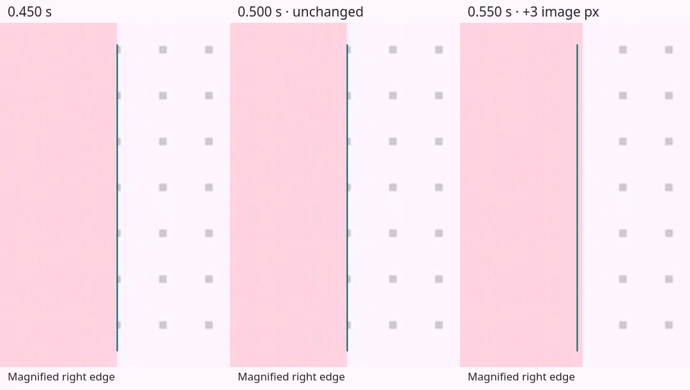
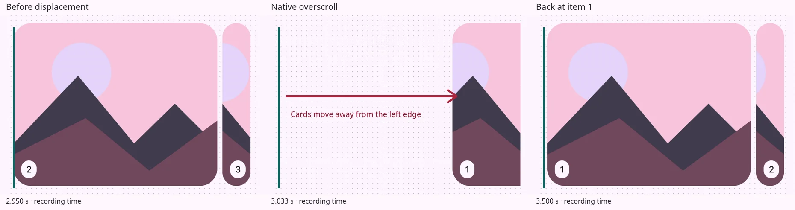

Carousel motion
Help fix carousel stutter and overscroll!
Some carousel implementations pause or step as they settle after a drag. Some also overshoot excessively before correcting their position. The current baseline is smooth on PC. I need your help fixing the remaining iOS issues.

Playground
Try scrolling, dragging slowly, and releasing the carousel. Record an interaction below to download its motion data as JSON.
Loading experiment…
Recording
Stop after the carousel settles.
Loading recorder…
The last five recordings stay in this tab when you change playground settings. Download them before reloading or closing the tab. Recording stops when the page is hidden or after 60 seconds.
What’s recorded?
The tool records browser and display settings, input events, frame timestamps, native scroll offsets, and assigned CSS values. Recordings stay local to this tab; nothing is uploaded.
Pair the JSON with a screen recording to compare CSS values with rendered motion!
Implementation history
| Version | Change | Observed result |
|---|---|---|
| V1 · Original native scrolling | Native smooth scrolling with queued geometry updates. | Stutter on desktop and iOS. |
| V2 · MD3-timed settling | MD3-timed settling, transform positioning, and native scroll writes on each frame. | Remaining roughness during settling. |
| V3 · Synchronized visual settling | Fractional settling and artwork offsets with native synchronization at completion. | Smoother desktop motion with remaining touch jitter and stutter. |
| V4 · Boundary clamping | Boundary clamping with layout containment and compositor hints. | Reduced directional jitter with remaining settling stutter. |
| V5 · Current baseline | Sticky track and boundary clamping without layout hints. | Smoother desktop motion with remaining touch settling steps. |
| V6 · Fixed masks | Fixed mask widths and artwork offsets with scroll-driven positions. | Remaining stutter, gaps, and overlaps. |
| V7 · Native-flow control | Fixed-width cards in normal flow. | Smoother initial phone tests; desktop scroll-wheel settling still steps. |
| V8 · Whole-pixel settling | Whole-pixel positions during custom settling. | Smooth mouse-release settling in the latest desktop test. |
| V9 · Custom touch settling | Native dragging followed by fractional custom settling. | Smoother initial settling with late corrections and boundary overscroll. |
Stutter and overscroll
These recordings show pauses during settling, small position corrections, and a large displacement after a slight touch.
Release traces
Zero is the recorded input event: touchend on iOS, mouse pointerup on PC, or the arrow-button event for the Native PC capture. The reference curve uses 300 ms MD3 standard easing from the sampled position at that event.
Load a playground JSON recording. Choose a release event or set time zero yourself. The file stays in this tab.
The last frame supplies the CSS edge target. Adjust the native scroll target if the recording ends before settling.
V8 · Whole-pixel settling · desktop target

V1 · Original native scrolling · iOS

V5 · Current baseline · iOS

V9 · Custom touch settling · small correction

V9 · Custom touch settling · boundary overscroll



V7–V9 · Additional iOS recordings
V7 · Native-flow control · iOS

V8 · Whole-pixel settling · iOS

V9 · Custom touch settling · iOS

Device results
Earlier versions stuttered on PC. Later desktop tests showed smoother motion. Touch stutter remained on iPhone 15, iPhone 13 Pro Max, and iPad Air (5th generation). Tests included Safari, Chrome, Firefox, and Brave on iOS. The later MacBook Air M4 test showed no stutter.
Native scrolling and Touch handoff felt smoother in initial phone tests. Further handoff tests exposed the overscroll regression. Desktop mouse release and baseline touch release use different settling paths.
How the versions differ
The carousel uses HTML cards with inline SVG artwork. Most versions change the visible card widths as the scroll position changes, while keeping the artwork at a fixed size.
V5 · Current baseline positions the cards in a sticky track. V7 · Native-flow control uses fixed-width cards in normal document flow to show how the browser scrolls without that masking logic.
The later versions use MD3 standard easing over 300 ms for mouse-release and arrow-button animations. iOS swipes usually settle through native browser scrolling. V9 · Custom touch settling switches to JavaScript animation when the finger lifts.
Help fix the iOS release
Have a fix or a smaller reproduction? Open a pull request with the change, the implementation tested, and a before-and-after recording. Include the browser, device, and input method.
Keep the cards’ changing widths and the artwork’s proportions. Preserve vertical page scrolling, keyboard navigation, and reduced motion.